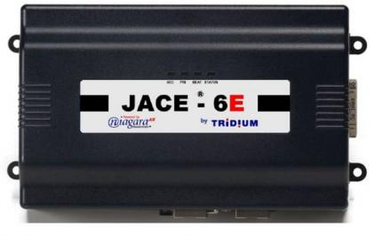
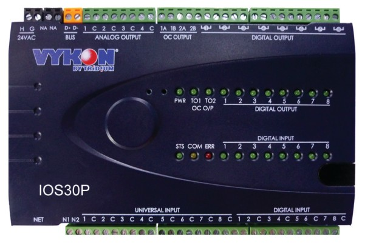
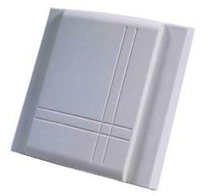

-

VYKON JACE - 600E
VYKON JACE-600™（Java应用控制引擎）是一个结构紧凑的嵌入式控制器/服务器平台。它在一个小型紧凑的平台上能够提供互联网连接和Web服务的能 力，具备集成控制、监视、数据记录、报警、日历和网络管理等功能。
VYKON JACE - 600E
综述
VYKON JACE-600™（Java应用控制引擎）是一个结构紧凑的嵌入式控制器/服务器平台。它在一个小型紧凑的平台上能够提供互联网连接和Web服务的能力，具备集成控制、监视、数据记录、报警、日历和网络管理等功能。JACE-600E使得透过互联网远程控制和管理各种设备成为可能，并且通过基于Web的图形页面为用户提供实时的信息。
应用
JACE-600E是分布式控制和管理系统的理想选择，适用于各种不同规模的设施系统。具有可选的输入/输出模块，支持插接，满足就地控制的需求。JACE-600E还支持多种现场总线，可以连接远程I/O以及独立控制器。在小型设施应用中，JACE-600E可以满足一个完整系统的所有需求。
JACE-600E就地通过以太网、远程通过互联网、或者拨号的调制解调器连接，基于标准网络浏览器提供实时数据和丰富的图形交互界面。在大型设施、多栋建筑应用以及大范围采集控制集成系统中，可以使用Niagara AX Supervisor™服务器软件从大量JACE控制器中汇集信息（实时数据、历史记录、警报等）到一个统一的应用。AX Supervisor 服务器可以管理全局控制，支持多个网络间的数据传输，连接到企业级软件应用，同时支持多个客户端工作站通过局域网、互联网或拨号调制解调连接访问。
-
IP 智能 DDC 控制器 IOS30P
基于Sedona开源框架的IP可编程控制器，是对传统DDC设计的颠覆，与IT系统兼容；
IP 智能 DDC 控制器 IOS30P
综述
基于Sedona开源框架的IP可编程控制器，是对传统DDC设计的颠覆，与IT系统兼容；
抹平传统BMS的复杂网络结构，利用IP网络简化，降低项目成本；
支持多种主流开放协议，与大部分BA平台和自动化平台兼容；
可作为独立控制器或区域控制器使用，灵活度高，能够承担各种复杂运算逻辑和功能；
成熟的编程开发工具，易于上手，快速部署；
高指标硬件平台，强大运行能力，全球安装量超过50,000台。
主要特点：
多协议以太网控制器
● 以太网端口同时支持BacnetIP、Modbus TCP及Sox协议
● RS485端口支持Modbus RTU和Bacnet MS/TP协议
● 所有配置改变都受密码保护，高网络安全
● 与各种BA及工控软件系统兼容
多种输入/输出类型
● 8个通用输入，支持电流、电压、电阻和热电偶
● 8个数字输入
● 8个数字输出（继电器型）
● 4个模拟输出（电流和电压型）
● 2个带隔离的集电极开式输出（PWM）
● 32Bit处理器，高精度模拟输入/输出通道
● 可自定义阻值温度表
Sedona Framework
● 行业最新的开源框架
● 支持Workbench图形化编程工具
● 支持远程实时编程，大大提高效率
● 内置大量HVAC控制逻辑及模块
● 可以快速定制特殊控制和管理功能
● P2P，历史记录，日程，报警，Email，NTP，DNS等一系列高级功能
-

壁挂温度传感器
SRA-T 系列风道温度传感器通过热敏电阻 NTC、铂电阻 PT 或者镍电阻 NI 来作为敏感元件来检测温度。VECTOR 公司为了兼容国际流行的 DDC 控制系统，提供了多种规格的热敏电阻和铂电阻供用户选择。 SRA-T 是高质量的、拉伸强度高的白色塑料外壳， 采用防火材料 ABS ，外性时尚大方，可以与各种室内装修相协调。
壁挂温度传感器

特点
• 多种热敏电阻传感器可选，PT1000 或 PT100 铂电阻可选以满足您的系统要求
• 室内温度测量
• 安装简单，牢固
应用
• 用于室内温度控制
概述
SRA-T 系列风道温度传感器通过热敏电阻 NTC、铂电阻 PT 或者镍电阻 NI 来作为敏感元件来检测温度。VECTOR 公司为了兼容国际流行的 DDC 控制系统，提供了多种规格的热敏电阻和铂电阻供用户选择。
SRA-T 是高质量的、拉伸强度高的白色塑料外壳， 采用防火材料 ABS ，外性时尚大方，可以与各种室内装修相协调。
结构设计合理，便于安装。
探针是由被玻璃封装的具有负温度系数的铂薄膜或者镍电阻构成的。这些敏感元件的阻值都是遵循特定曲线跟随温度变化的。下表是传感器选型表，表中列出了产品名称、阻值表，兼容厂商信息。